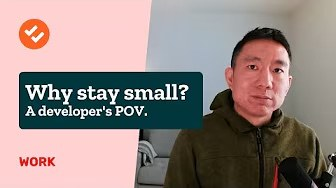
Jan 2026One small tweak can make it all make sense Oct 2025Masking the annoying detail in UX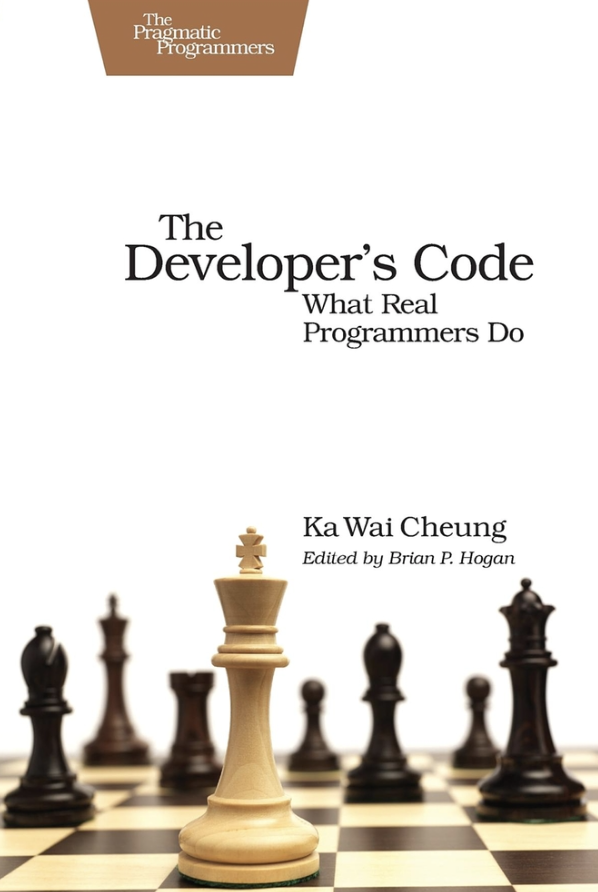
2012 Sep 2025The best feeling Sep 2025Here’s to the crafty web Sep 2025Building products with basically nothing Aug 2025I think mobile designs cause forgetfulness Jul 2025I’m feeling pretty good about writing Jul 202537signals? Almost. Jun 2025Holding on to the feeling of making Jun 2025A new word for simple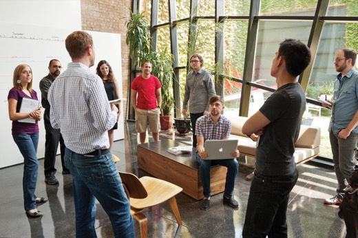
“Scrum” (c 2013) Jan 2025Is the journey really the gift?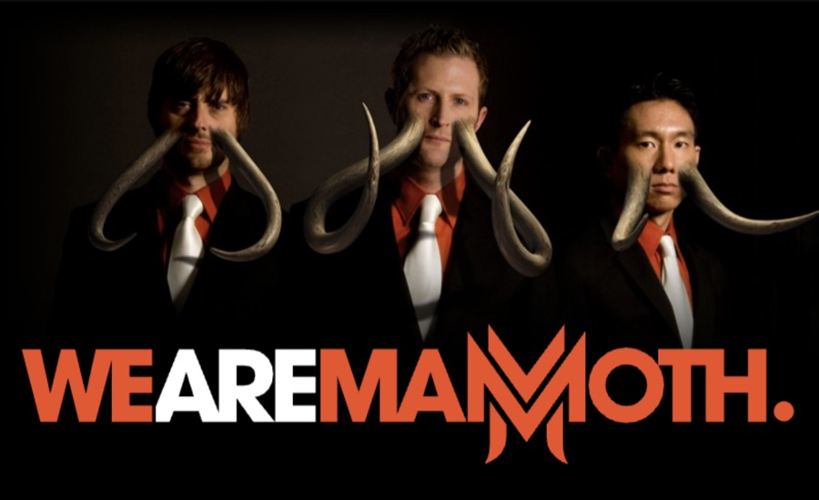
The original photoshoot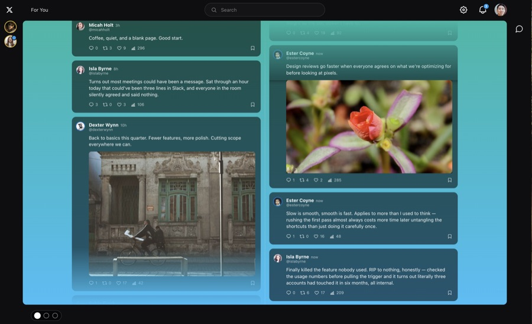
DextopMy T(hre)E(a)D(on)X talk Dec 2023Why it is hard to write about code Dec 2023Why cache invalidation is hard Dec 2023Using CSS classes as markers Dec 2023The thing to think about with feature gating Dec 2023The small pleasure of info tables Dec 2023The nth impression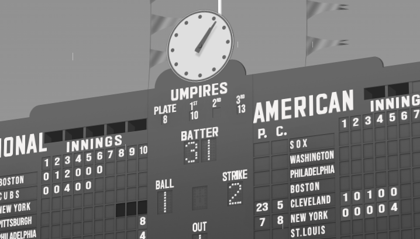
Wrigley Field, 1941 Dec 2023Starting design with space Dec 2023On transitioning from software writing to just writing Dec 2023It’s the end…and I feel fine Dec 2023How I build software (like a musician) Dec 2023Code as the design medium Jun 2017What’s your weekly work pyramid? Apr 2017Where the software ends Apr 2017Sometimes, it’s life-work balance Apr 2017Finding big passions in small things Apr 2017Being brief Mar 2017When I first learned about the impact of design Mar 2017The life changing magic of tidying up your codebase Mar 2017Shining the spotlight on stage crew software OneSpot Mar 2017A maker’s approach to managing projects Nov 2016Why sports matter to some of us Nov 2016What’s the greatest piece of advice you’ve ever received? Nov 2016How about a refactorthon? Oct 2016Camaraderie and recognition inside the development team Sep 2016Make good decisions Sep 2016Finding comfort in the uncomfortable Sep 2016Building and maintaining a global search catalog using Lucene Aug 2016There are rockstars and there are bands Aug 2016Remembering the rabbits: A fond farewell to Flash May 2016The unintended byproducts of refactoring code May 2016The mythical couch-lift May 2016Sometimes archaic technology is the most effective kind PhilosophyI hold strong opinions loosely but here are the few that keep tightening their grip over time. May 2016Finding those “clear glue” moments Mar 2016Why I (still) write code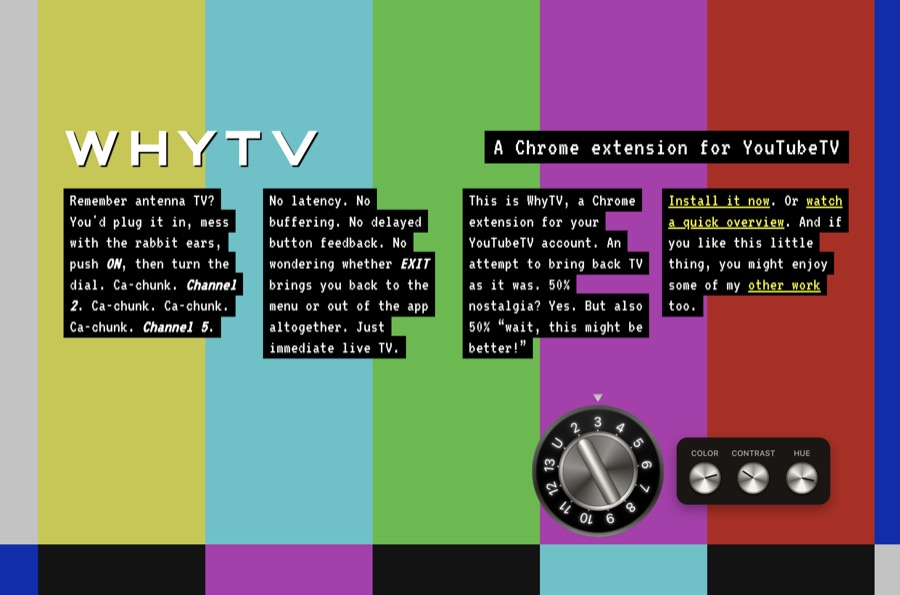
WhyTV Mar 2016How the evolution of baseball stadiums might inform the future of web design Jan 2016Hiring into boundaries Sep 2015Why it is hard to write about code Sep 2015The psychological battle of big refactorings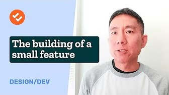
Aug 2015An homage to strict coding Jul 2015A primer on delivering a good presentation Jun 2015The personal lessons I’ve learned in business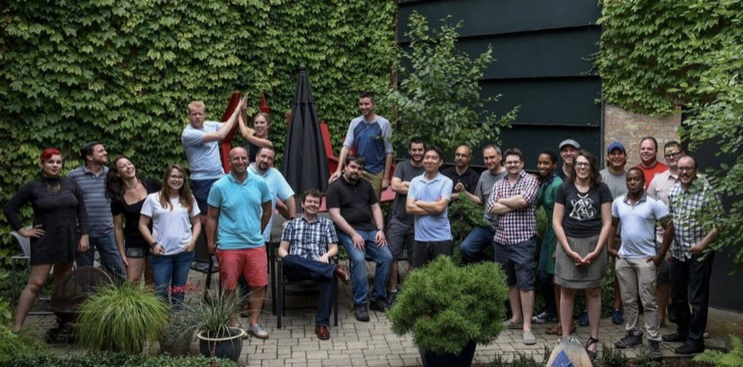
We Are Mammoth, 2016 Jun 2015The overlooked benefits of making yourself busy May 2015Building the optimal user database model for your application Apr 2015Where automated testing should (and shouldn’t) fit in your strategy Apr 2015Do what you love (but know what love is) — DoneDone Feb 2015Why programmers should be a part of the design process — DoneDone Jan 2015Give away the punchline Nov 2014Cut the problem in half DnsDigest Oct 2014The hard thing about testing Jul 2014The face on the other side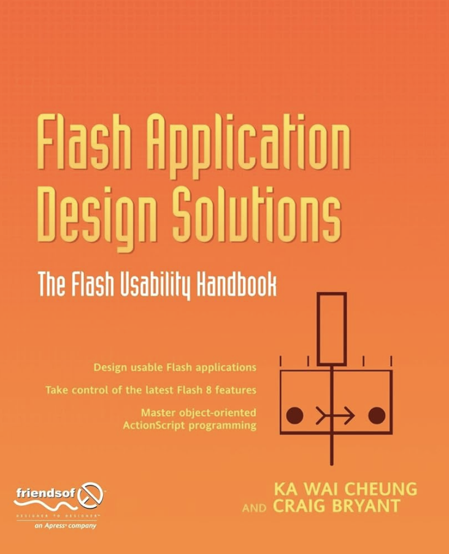
2006 Jul 2014Life imitates code: Three life lessons I’ve learned from programming Jun 2014A remote-first approach to the workplace May 2014The least you can do Apr 2014Want fewer bugs? Test these five cases Mar 2014The redesign, the wait, and the response — DoneDone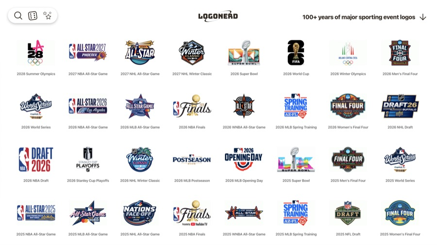
LogoNerd Mar 2014Quiet please: The benefits of online chat in the workplace DoneDone - Intro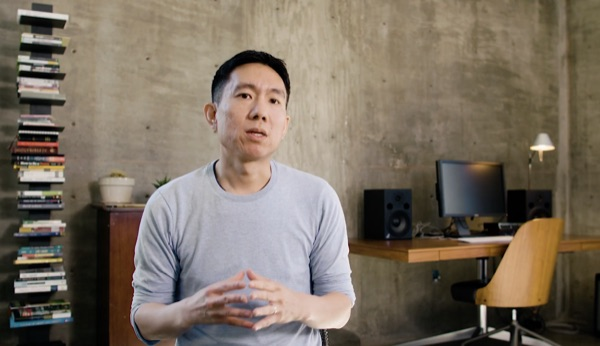
DoneDone - Our Story Feb 2014A fast code culture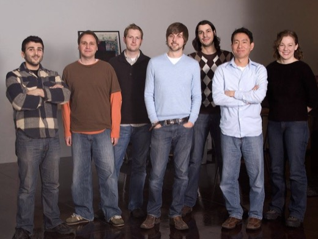
We Are Mammoth, 2008 Mar 2013Humility is at the heart of every problem solver Feb 2013Why there will never be a programmer in the White House Feb 2013The golden rule on creating rules Jan 2013Write code to read it, not to bow to it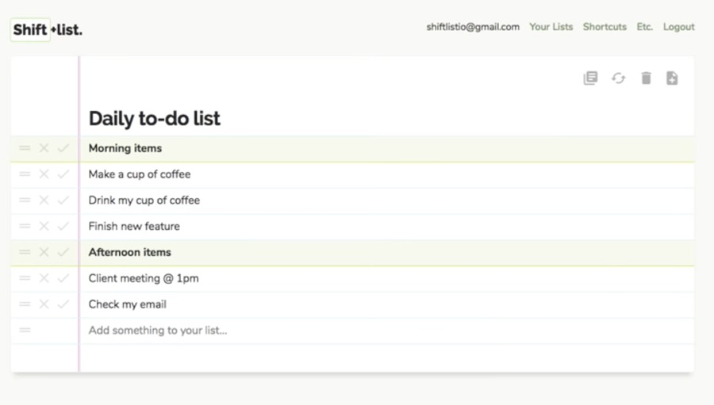
Shiftlist Jan 2013Reaching programmer’s nirvana by letting go of perfection Jan 2013Keep working on the easy stuff Jan 2013Create your own sense of urgency Aug 2012Teach abstraction through concreteness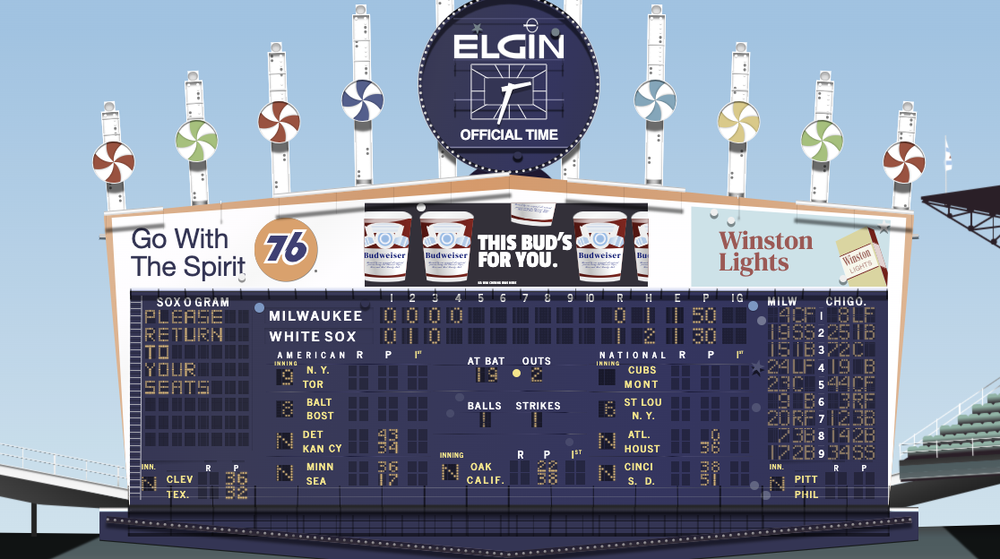
Comiskey Park, 1978 Aug 2012Legacy code is good for your business culture Apr 2012Who is the new business programmer? May 2011Thank goodness I usually don’t have a strong opinion Mar 2011Why you should (and shouldn’t) track time Feb 2011The importance of familiarity within a team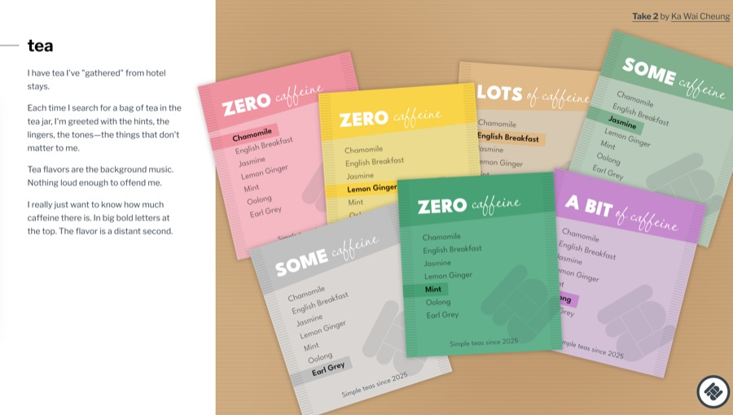
Take Two Dec 2010Time your details Oct 2010The benefits of the imperfect art of handwriting Mar 2010Selling the process with the product Mar 2010Recalibrating your senses Feb 2010Treat time as an ingredient, not a currency Jan 2010Being your own boss is about being your own employee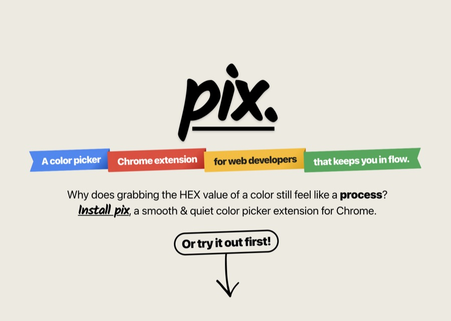
Pix Oct 2009Simple sells depending on who you’re selling it to 37signals application, 2025 Sep 2009Fixing software problems after the fact Aug 2009Building an ISV on top of a client business Aug 2009.NET MVC/LINQ/jQuery let you care about the details later Mar 2009Use what you design Mar 2009Breaking old habits: Delete your crusty old code Feb 2009Make less interface when you can Jan 2009How important are bad first impressions of software? Nov 2008Quality starts and a save: Starter-reliever development Aug 2007Make your product better in 2 ways everyday Oct 2006Abstracting your writing is as important as abstracting your code